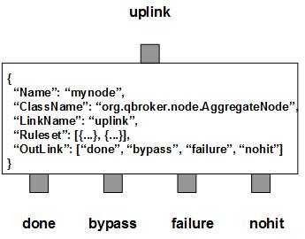

AggregateNode maintains dynamic sessions and aggregates JMS messages according to their content and the predefined rulesets. It filters them into three outlinks: bypass for all the aggregated messages, nohit for those messages do not belong to any predefined rulesets, failure for the messages failed at the aggregations. AggregateNode will create a new message, TextMessage, as the result of the aggregation for each unique key in every session. These new messages will be flushed to the outlink of done when their sessions terminate.
AggregateNode contains a number of predefined rulesets. These rulesets categorize messages into non-overlapping groups. Therefore, each ruleset defines a unique message group. A ruleset also defines the unique keys for the group and how to aggregate the messages sharing the same keys. Each group has its own cache for aggregations. The aggregation process is maintained by sessions with certain lifetime. For each unique key, there is a cached message with aggregated data. A ruleset also defines parameters used for the aggregation, such as DynamicSession, TimeToLive, SessionSize, CountField and TerminationField, etc. The lifetime of a session is determined by TimeToLive in seconds. Therefore, AggregateNode knows when to terminate an aggregation session. However, a session can belong to a key or all the keys in a ruleset. If DynamicSession is set to true on a ruleset, each key of that ruleset will have its own session. When the session is terminated, only the cached message for that key will be flushed to the outlink of done. By default, DynamicSession is set to false. It means all the keys in a ruleset will share the same session by default. In this case, if the session is terminated, all the cached messages for that ruleset will be flushed out at the same time.
The aggregation on message body is defined separately in BodyAggregation. It supports the first, last, append for text, and merge for JSON or XML payload. In case of merge for JSON payload, JSONPath is required in the map. JSONPath defines a JSONPath expression that is used to select the data from the responses. The selected data will be merged as a child node to the parent node in the aggregated JSON. In case of merge for XML payload, XPath is required in the map. XPath defines an XPath expression that is used to select the data from the responses. The selected data will be merged as a child node to the parent node in the aggregated XML.
Currently, AggregateNode supports 4 different ways to terminate a session. First, TimeToLive specifies the lifetime of any key in the cache for the ruleset. If a key expires in the cache, its session is terminated. The expired keys will not participate the aggregation process. But they may not be flushed out until the next flush operation. Second, if the total number of cached keys in a ruleset exceeds the SessionSize, AggregateNode will try to find any expired keys to flush to save space. If CountField is defined in a ruleset, AggregateNode will retrieve the total count from the incoming messages. The total count will be used to terminate the aggration session on the key. If TerminationField is defined, AggregateNode will check that property on each incoming message. If an incoming message has a non-empty value on that property, it will be treated as the terminator. The aggregation session for the key will be terminated as a result.
AggregateNode also supports plugins for customized aggregations. In order to support plugins, ClassName of the implementation should be defined in the ruleset. The class should have a public method of aggregate() that takes two JMS messages as the arguments. The first message is the incoming one. The second message is the cached message for aggregations. The method is supposed to return null for success or an error text for failures. It should not modify the incoming message by all means.
Apart from user defined rulesets, AggregateNode always creates one extra ruleset, nohit. The ruleset of nohit is for those messages not hitting any matches. The number of aggregation messages is storded into the RULE_PEND field. Their property displaying and resetting are mutual-exclusively determined by the DisplayMask and StringProperty of their own rulesets. If DisplayMask is not defined in a ruleset or it is set to 0 or -1 (by default), its StringProperty will be used to reset the string properties of the aggregation messages. Otherwise, its StringProperty will only be used to display the details of aggregation messages. On the node level, DisplayMask and StringProperty control the displaying result of all candidate messages. But if the DisplayMask of a ruleset is set to -1, that rule will inherit the DisplayMask and the StringProperty from the node for display control on the rule level.
AggregateNode also supports single key sessions. In order to enable the single key session, SessionSize has to be set to 1. In this case, AggregateNode is assuming that all keys of input messages are already grouped in packs. It means all messages with the same key stay together. Any new key will trigger the previous aggregation session terminated.
You are free to choose any names for the four fixed outlinks. But AggregateNode always assumes the first outlink for done, the second for bypass, the third for failure and the last for nohit. Any two or more outlinks can share the same outlink name. It means these outlinks are sharing the same output channel.
Apart from the common properties, there are some implementation specific properties for AggregateNode.
| Property Name | Data Type | Requirement | Description | Examples |
|---|---|---|---|---|
| SessionSize | integer | optional | default limit on number of the cached messages in a rule | 100000 (default: 0) |
| Heartbeat | integer | optional | interval in sec to check sessions | 30 (default: 60) |
| Threshold | 3 integers delimited by comma | optional | threshold for the cache to be flushed | 100,500,1000 (default: 0) |
The aggregation operation is executed via the pre-defined rulesets. Therefore, the configuration of the rulesets is critical to the operations of AggregateNode. Here are complete properties of rulesets for AggregateNode.
| Property Name | Data Type | Requirement | Description | Examples |
|---|---|---|---|---|
| Name | alphanumeric with no spaces | mandatory | name of the ruleset | event |
| DynamicSession | string | optional | flag for dynamic sessions | true (default: false) |
| TimeToLive | integer | optional | lifetime in sec for the cache | 300 |
| SessionSize | integer | optional | max number of the cached messages in a rule | 100000 (default: same as the node) |
| CountField | string | optional | field name for count of the session | Count |
| TerminatorField | string | optional | field name for a terminator message | Terminator |
| KeyTemplate | string | optional | template for the aggregation key | ##site## |
| KeySubstitution | string | optional | text subsctitution for the aggregation key | s/^0// |
| Aggregation | list | required for aggregation | list of aggregations | see example |
| BodyAggregation | map | required for aggregation on message body | for body aggregation parameters | see example |
| PreferredOutLink | alphanumeric with no spaces | mandatory for bypass only | name of the preferred outlink | bypass |
| ClassName | alphanumeric with no spaces | optional | full classname of the plugin aggregation | |
| AggregatorArgument | object | mandatory by plugin only | configuration data for plugin | see example |
| FormatterArgument | list | optional | list of post format operations for aggregation messages only | see example |
| JMSPropertyGroup | list | optional | list of pattern groups on properties to select messages | see example |
| XJMSPropertyGroup | list | optional | list of pattern groups on properties to exclude messages | see example |
| PatternGroup | list | optional | list of pattern groups on body to select messages | see example |
| XPatternGroup | list | optional | list of pattern groups on body to exclude messages | see example |
| StringProperty | map | optional | for setting the user properties on the messages | see example |
| Displaymask | integer | optional | mask to display messages in logs | 6 (default: -1) |
{
...
"Ruleset": [{
"Name": "bypass",
"PreferredOutLink": "BYPASS",
"JMSPropertyGroup": [{
"JMSType": "^score$"
}],
}],
...
}
where it sends the messages to the outlink of BYPASS without processing them.
Here is an example of the aggregation ruleset.
{
...
"Ruleset": [{
"Name": "story",
"DisplayMask": "64",
"JMSPropertyGroup": [{
"name": "."
}],
"TimeToLive": "60",
"TerminatorField": "Count",
"KeyTemplate": "##name##",
"Aggregation": [{
"FieldName": "ts",
"Operation": "first",
"DefaultValue": "0"
},{
"FieldName": "name",
"Operation": "first",
"DefaultValue": "unknown"
}],
"BodyAggregation": {
"Operation": "append",
"DefaultValue": ""
},
}],
...
}
Here is an example of BodyAggregation for XML.
{
...
"Ruleset": [{
...
"BodyAggregation": {
"Operation": "merge",
"XPath": "//president",
"DefaultValue": ""
},
...
],
...
}
Here is an example of BodyAggregation for JSON.
{
...
"Ruleset": [{
...
"BodyAggregation": {
"Operation": "merge",
"JSONPath": ".file",
"DefaultValue": ""
},
...
],
...
}
Here is an example of AggregateNode:
{
"Name": "node_aggregate",
"ClassName": "org.qbroker.node.AggregateNode",
"Description": "aggregate messages",
"Operation": "aggregate",
"LinkName": "aggr",
"Capacity": "128",
"DisplayMask": "0",
"Debug": "1",
"Heartbeat": "10",
"SessionSize": "1024",
"Threshold": "50,100,50000",
"Ruleset": [{
"Name": "bypass",
"PreferredOutLink": "nohit",
"JMSPropertyGroup": [{
"type": "^disk_io$",
"Device": "^sda$"
},{
"type": "^disk_io$",
"Device": "^sd",
"KRead": ["[1500000.0,)"]
},{
"type": "^disk_io$",
"Device": "^sd",
"KWrite": ["[150000.0,)"]
}]
},{
"Name": "disk",
"DisplayMask": "64",
"JMSPropertyGroup": [{
"type": "^disk_io$",
"Device": "^sd",
"Count": "^\d+$"
}],
"TimeToLive": "90",
"KeyTemplate": "##JMSCorrelationID##",
"CountField": "Count",
"DynamicSession": "true",
"Aggregation": [{
"FieldName": "KRead",
"Operation": "sum",
"DefaultValue": "0.0"
},{
"FieldName": "KWrite",
"Operation": "sum",
"DefaultValue": "0.0"
},{
"FieldName": "NRead",
"Operation": "count",
"Condition": "(0.0,)",
"DefaultValue": "0"
},{
"FieldName": "NWrite",
"Operation": "count",
"Condition": "(0.0,)",
"DefaultValue": "0"
},{
"FieldName": "type",
"Operation": "first",
"DefaultValue": ""
},{
"FieldName": "LogTime",
"Operation": "first",
"DefaultValue": "unknown"
}]
}],
"OutLink": [{
"Name": "merged",
"Capacity": "256",
"Partition": "64,64"
},{
"Name": "null",
"Capacity": "128",
"Partition": "64,64"
},{
"Name": "failure",
"Capacity": "256",
"Partition": "192,16"
},{
"Name": "nohit",
"Capacity": "256",
"Partition": "192,16"
}
}
where there are two rules. The first is the bypass. The second is to sum
the disk io within the session. CountField is to terminate the session.